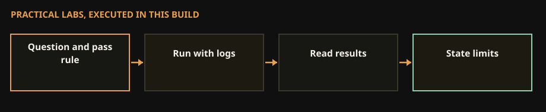
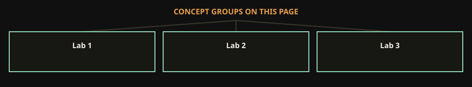

Practical labs, executed in this build
Three labs ran on this machine on 20 November 2026. Results below come from tool output. No lab ran a send, spend, post or deploy act.

Environment: Python 3.12.3, pytest 9.1.1. Code sits in the repo under labs/. Full log: labs/RESULTS.md.
Lab 1. Python service: feature plus bug fix
Question: can a test first flow catch a page slice bug and prove a priority filter?
Baseline bug: a page start of page times per_page skips page one items. Fix: start equals page minus one, times per_page.
Feature: list tasks by priority, with page rules held.
cd labs/lab1 python3 -m pytest -q # result: 5 passed in 0.02s
Tests: first page, second page, priority filter, filter plus page, complete act. Quality rule set before the run: all five tests pass, with exact id lists.
Human steps in the lab run: code write and result read by the build agent. No user act took place. Cost: local run, zero model tokens for the test run.
Lab 2. Retrieval benchmark with a ceiling effect
Question: does TF-IDF cosine beat exact keyword count on precision at 5?
Design: 200 synthetic docs, 4 topics, 20 queries, k of 5, 3 repeats, seed 42. One factor changes: score method.
cd labs/lab2 python3 benchmark.py # keyword: precision@5 runs=[1.0, 1.0, 1.0] mean=1.0, 0.0407s per run # tfidf: precision@5 runs=[1.0, 1.0, 1.0] mean=1.0, 0.0603s per run
Hard variant, seed 7, 6 of 15 words as cross topic noise: both methods score 1.0 on all repeats.
Finding: ceiling effect. Synthetic topics split too clean, so this test cannot rank both methods. A single pass run forms a demo, not a ranking. Next test: queries with words shared by two topics, plus human judged relevance on real docs. This fail case stays in the site by design: a benchmark that cannot split two methods proves no win for a method.
Lab 3. Business workflow: cited report artifact
Question: can a collect, count, draft flow turn a source ledger into a review ready report with no send act?
cd labs/lab3 python3 make_report.py # rows=60 # confidence split: High 16, Medium-High 9, Medium 13, Medium-Low 18, Low 2, Low-Medium 2
Artifact: labs/lab3/report_artifact.md. Gate: a human must check each Low row before use. No mail, post or spend act ran.
Lab rules for your own runs
- State the question and the pass rule before a run.
- Record command, version, seed, run count and result.
- Change one main factor per ablation.
- Read errors by type before a fix.
- Mark a run as demo, reproduced result or new result. Keep all three apart.

Visual map of this page
Three views of one page: a Mermaid flow for work order, a markmap for concept groups, and a read guide for the flow.
Mermaid source, for offline read
flowchart TD A[Lab 1: service tests] --> D[Results log] B[Lab 2: retrieval bench] --> D C[Lab 3: cited report] --> D D --> E[Limits and next test]
How to read the flow diagram. Step 1: start at the left box. Step 2: follow each arrow to the next stage. Step 3: at a branch box, read both paths before a choice. Step 4: a loop arrow means work returns for one more pass vs a test.
Markmap: concepts on this page
- Practical labs, executed in this build
- Lab 1
- 5 tests pass
- Page slice fix
- Priority filter
- Lab 2
- Both methods 1.0
- Ceiling effect
- Harder test named
- Lab 3
- 60 ledger rows
- Confidence split
- Draft only, no send
- Lab 1